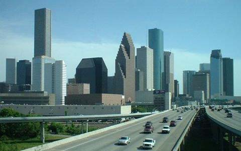

Меню
Хьюстон

Хьюстон (англ. Houston) — четвёртый по количеству жителей город в Соединённых Штатах Америки и крупнейший город в штате Техас. По данным переписи населения США в 2012 году в городе проживало 2 160 821 человек. Хьюстон является административным центром округа Харрис, а также главным экономическим центром агломерации Большого Хьюстона с общим населением 6 108 060 человек. Город располагается в 50 километрах от Мексиканского залива на прибрежной равнине, площадь его составляет 965 км².
Хьюстон был основан 30 августа 1836 года и включён в состав республики Техас 5 июня 1837 года. Город получил своё имя в честь Сэма Хьюстона, главнокомандующего армией Техаса во время Техасской революции, президента Республики Техас и ключевой фигуры в истории региона в целом. Быстрое развитие порта и железных дорог, а также начало добычи нефти привели к быстрому росту населения. В 1960-е годы количество жителей превысило один миллион человек; в 2000-е годы был преодолён рубеж в два миллиона.
Городская экономика представлена предприятиями в области энергетики, аэронавтики, транспорта, здравоохранения. Город является ведущим центром производства нефтедобывающего оборудования. Порт Хьюстона занимает первое место в США по международным грузоперевозкам. Важнейшими объектами для экономики и инфраструктуры города являются космический центр имени Линдона Джонсона, хьюстонский судоходный канал, а также Техасский медицинский центр, включающий в себя большое количество лечебных институтов, госпиталей и медицинских школ.
Copyright © 2014. Все права защищены.